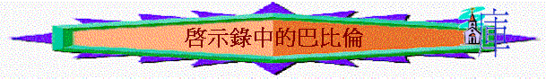

|
怎樣解釋啟17-18的大巴倫？ |
筆者認為大巴倫是指在大災難要被重建的實在城市，而17-18章都是同指那重建的一個城市。雖然有不少學者認為17-18章是一個象徵，代表兩樣不同的東西，17章是指宗教大巴倫，末世的教會，18章是指經濟及政治的大巴倫，但筆者卻不同意，反支持是指同一個實在的城市，理由如下：
a)
17-18章所象徵是兩樣不同的東西的理由不充分
他們說大巴倫一個(7)中可能是指末世的假教會，18章是經濟的大巴倫，基於他們認為17-18章所指的大巴倫有所不同，例如從下面的圖表可顯示兩者不同：
| 17章 | 18章 | |
| 導言之天使 | 七碗中一位（17:1） | 另一位（18:1） |
| 毀巴比倫之人 | 敵基督，十聯盟（17:8） | 主神（18:8） |
| 眾王對他反應 | 恨它（17:16） | 為她哭泣（18:9） |
| 被毀的時候 | 大災難中（13:8） | 大災難末期主再來 |
因此都不是同指一個巴比倫，而17:6說這淫婦是喝醉聖徒的血，聖經慣用淫婦代表離棄神的人，故可能17巴比倫是指末世離棄神的宗教系統，此宗教團體既有財富（17:6），也同地上君王，政治上有連繫（17:2），並且殺害聖徒（17:6），所以有人從歷史中，指出此離棄神的宗教，就是變了質的教會──天主教了﹗
而18章卻重點在貿易、經濟中，似乎象徵了敵基督在大災難後三年半，掌管一切政治及經濟，但最後都要被毀滅，所以18章可能是指末世高業、貿易的團體或勢力。
但我們仔細留意上述理由，卻發現許多不充份的地方：
i
） 兩個不同的天使在17、18章出現，只能証明約翰所見的可能兩個不同的異象，不是同樣描述同一件事。
ii
） 毀滅巴比倫的不是分別不同，而是同指向神自己﹗因為17:7說「因為神使諸王同心合意，遵行祂的旨意」明顯17中滅巴比倫的不是敵基督與十聯盟，而是背後掌握他們的神，而18章也是神自己滅大巴倫的﹗
iii
） 說眾王的反應（對巴比倫）有所不同，但若留意經文，會發現17章的王是指向十王，而18章所指的是地上闊的王，所以有所不同也不出奇﹗
iv
） 被毀滅的時間是否在大災難末期，主再來的日子（在18章的大巴比倫），似乎在18章中不能有足夠理由証明是在此時候。
v
） 聖經中好多時候指淫婦，未必是指宗教上的離棄神，有時候指向外邦的國家，例如亞述和推羅（鴻3:4，賽23:16-18）等。
由此可見，指17-18是不同的象徵，似乎不太可能了﹗
b)
17-18章是指同一個在末期要重建的城的理由卻充分
i
）啟17-18章的內証
啟17-18約翰明說：「你們看見的那女人，就是管轄地上眾王的大城」第18章2節也說巴倫大城，同是說大城，不是象徵兩樣不同的東西，若不是指大城，為何17-18章不加以解釋﹗
ii
）啟17-18描述的大巴倫有太多相似的地方
例如在名稱（17:5，18:2），在身份（17:18，18:2,21），在裝飾（17:4，18:16），手中之物（17:2,18:3）及眾王的關係(17:2，18:9）等，幾乎所描述的內容都是一樣，明顯兩者同指大城的機會極高﹗
iii
）啟示錄其他的章節內証
14:8,16:9預言大巴倫的滅亡，所指巴比倫只是一座城，沒有其他，是同一的﹗只有一個的﹗而14:8節的描述在17:2及18:3也找得到，似乎14:8,16:9與17,18章都是指向同一個巴比倫，另外19:1-3天上讚美神審判大淫婦的聲音，這讚美正是18:20眾聖徒、眾先知的回應，所以在約翰心目中的大淫婦不單是１７章的巴比倫，也是18章的巴比倫，所以17-18同是指大淫婦，同是指向相同的預表。
iv
）其他經文的明証
(
1
)耶利米書50-51
此兩章聖經描述巴比倫城，要預言完全傾覆，而啟17-18所描述的內容同耶50-51十分相似，似乎耶50-51所預言巴比倫城傾覆的情景正是在啟17-18中應驗，而事實上，我們發現昔日的巴比倫仍然未像耶50-51所講的應驗（完全地）。
e.g.耶51:8「巴比倫忽然傾覆毀壞」，按波斯記錄攻入巴比倫的記載中，巴比倫並非忽然被傾覆，反而古列王吩咐軍隊入城後，不准有任何破壞工作，所以51:8似乎仍未應驗
e.g.耶50:3「使他的地荒涼，無人居住，但按歷史發現，巴比倫在瑪代波斯時仍有人居住，而至今仍有一些細小村落散居在巴比倫範圍
所以耶50-51巴比倫的完全傾覆，似乎至今仍未應驗，而很大可能性，是像啟17-18所描述的時候，才真正應驗，故啟17-18極可能是耶50-51章的巴比倫城，在末世中要重建，並要在大災難傾覆，應驗耶50-51的預言﹗
(2)
賽13:6, 9:19, 14:22-23
也講及神要完全的除滅大巴倫城，既然至今仍未除滅，而耶50-51與賽所指的同是大巴比倫一個城，實在的城，而此兩卷書所描述的巴比倫也和啟17-18十分相似，所以有理由相信啟17-18是指一個要重建實在的巴比倫城了﹗
(3)撒迦利亞書5:5-11
也講述示拿--
人類最早背叛神的地方，也是指巴比倫會「蓋造房屋」，重建，所以巴比倫城，一個實質似乎滅亡的城會重建，並在啟17-18所描述的時間重建，實不足為奇。
v
) 現今資料的明証
巴比倫城，位於現今的伊拉克境內，而據消息透露，1986,
1987年，伊拉克總統侯賽因已然開始重建巴比倫城，所以巴比倫城重建己是有可能的事實，將來被傾覆，更在啟17-18已記載了﹗